The
sort::parallel Library
Francisco
Jose Tapia Copyright © 2015 Francisco Jose Tapia
3..-
Benchmarks
The benchmark of these algorithms try to measure the speed in a wide
range of elements. There are 3 benchmarks ;
1.- Sort of 100000000 uint64_t numbers
randomly generated. The utility of this benchmark is to see the speed
with small elements with a very fast comparison.
2.- Sort of 15000000 of strings. The strings is a very common element
to sort. The comparison is no so easy as the integers.
3.- Objects of several sizes. Each size have their own test. In the
sorting algorithms the operations involved are moving and comparing.
This test is done with objects of different sizes, with hard
comparison functions and objects of different sizes ( from 8 bytes to
256 bytes). This test show how is the response with big objects with
complex comparison. The code of the object is
template <uint32_t NN>
struct int_array
{ uint64_t M[NN];
int_array ( uint64_t K =0 )
{ for ( uint32_t i =0 ; i < NN ; ++i) M[i] = K;
};
uint64_t counter ( void) const
{ uint64_t Acc =0 ;
for ( uint32_t i =0 ; i < NN ; Acc += M[i++]) ;
return Acc ;
};
bool operator < ( const int_array &R) const
{ return ( counter() < R.counter());
};
~int_array ()
{ for ( uint32_t i =0 ; i < NN ; ++i) M[i] = 0;
};
};
For the benchmark I use the next additional code:
The benchmark are running on a Quadcore Q6600 2.4 GHz , with DDR3 1333
MHz with Ubuntu 14.10 x64. The result in other machine can vary
depending of the speed of the processor and memory, and the cache of the
processor.
The benchmark running in a 16 cores machine ( thanks to Cesvima,
Universidad Politécnica de Madrid ) the results shows the similar
performance of the TBB and the boost libraries. The GCC parallel
algorihms, shows his qualities being the fastest in several benchmarks
with his parallel sort
3.1.-
Linux 64 bits GCC 4.9
Many times the data to sort are previously sorted, and then the fast
detection of this is a desirable characteristic of the algorithms. The
response of the algorithms used in this benchmark is showed in this
table, when tray to sort 25000000 64 bits numbers ordered.
| ALGORITHM |
Time in seconds |
| GCC std::sort |
1.233 |
| Boost introsort |
0.036 |
| GCC std::stable_sort |
2.340 |
| Boost smart_merge_sort |
0.032 |
| Timsort |
0.032 |
| Boost spreadsort |
0.048 |
| GCC parallel sort |
0.590 |
| TBB parallel_sort |
0.025 |
| Boost parallel introsort |
0.035 |
| GCC parallel stable sort |
2.106 |
| Boost parallel stable sort |
0.039 |
| Boost sample sort |
0.041 |
| TBB parallel stable sort |
1.003 |
3.1.1.-Integer
benchmarks
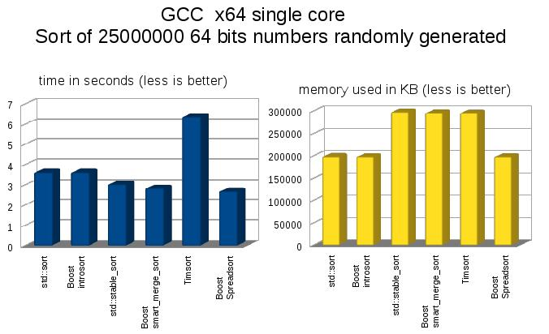
As you see, the spreadsort algorithm is much faster than the generic
algorithms.
The stable sort algorithms (std::stable_sort, boost smart_merge_sort and
Timsort) need additional memory.
TimSort it is not good for small size elements. It show its speed when
the size of the elements grows.
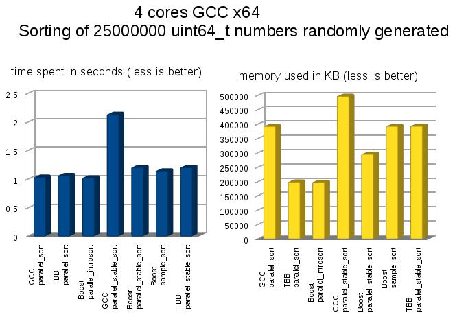
The additional memory needed for the parallel_stable sort is O(N/2), and
O(N) in sample sort and TBB parallel stable sort.
In the test with 16 cores the GCC parallel_stable_sort have similar
performance than the Boost and TBB algorithms. The main difference is
the memory used by the algorithms.
3.1.2.-
Strings benchmarks

The new algorithm smart_merge_sort shows its speed with the strings
compared with the others.
The spreadsort algorithm is extremely fast.
The memory used is similar in all the algorithms
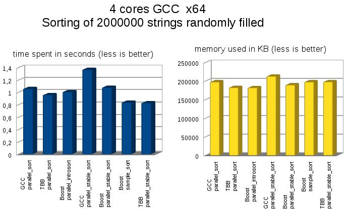
The memory used in all the algorithms is similar, but the highest speed
is with obtained with the stable sort (boost sample sort and TBB
parallel stable sort)
3.1.3.-Objects
benchmarks
In the sorting algorithms the operations involved are moving and
comparing. This test is done with objects of different sizes, with hard
comparison functions and objects of different sizes ( from 8 bytes to
256 bytes).
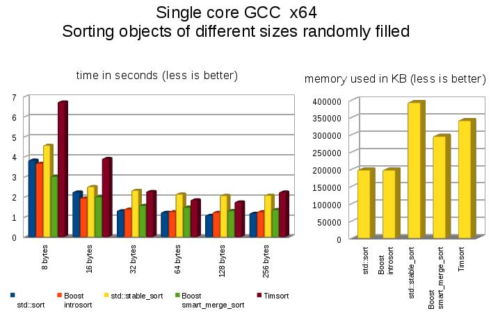
The not stable sort algorithms ( std::sort , boost introsort) are faster
than the stable algorithms (std::stable sort, boost smart_merge_sort and
timsort)
In the stable comparison the
fastest
with all the sizes is
smart_merge_sort. This algorithm had been designed and
implemented for this library by the author.
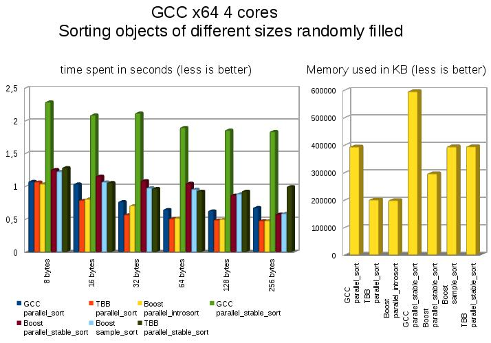
The not stable sort algorithms ( GCC parallel sort, TBB parallel sort
boost parallel_introsort) are faster and need less memory than the
stable sort algorithms (GCC parallel stable sort, boost
parallel_stable_sort, boost sample_sort and TBB parallel_stable_sort).
The not stable sort have similar speed but GCC parallel_sort need the
double of memory than the TBB parallel sort and boost
parallel_introsort.
The GCC parallel stable sort is the slowest of the stable algorithms,
and need a lot of memory. The others algorithms have similar speed, but
with very big objects, boost sample sort and boost parallel_stable_sort
are faster due to the introduction of the indirect sort for the very big
objects.
In the test with 16 cores the GCC parallel_stable_sort have similar
performance than the Boost and TBB algorithms. The main difference is
the memory used.
3.2.-Windows
7 64 bits Visual Studio 2015
Many times the data to sort are previously sorted, and then the fast
detection of this is a desirable characteristic of the algorithms. The
response of the algorithms used in this benchmark is showed in this
table, when tray to sort 25000000 64 bits numbers ordered.
| ALGORITHM |
Time in seconds |
| VC++ std::sort |
0.781 |
| Boost introsort |
0.046 |
| VC++ std::stable_sort |
2.638 |
| Boost smart_merge_sort |
0.042 |
| Boost spreadsort |
0.038 |
| PPL parallel sort |
0.296 |
| PPL parallel_buffered_sort |
0.464 |
| Boost parallel introsort |
0.047 |
| Boost parallel stable sort |
0.041 |
| Boost sample sort |
0.044 |
| PPL parallel radix sort |
0.515 |
An important detail is the optimization capability of the compiler. Some
algorithms are well optimized, but others not.This transform a fast
algorithm in a slow algorithms. The Boost introsort with the GCC
compiler for to sort 25000000 64 bits random numbers need 3.638 secs,
the VC++ compiler need 3.375, the difference is the 7.7 percent. But
with the smart_merge_sort, with GCC spend 2.837 and with VC++ 4.566, the
difference is a 61 percent of difference.
3.2.1.-Integer
benchmarks
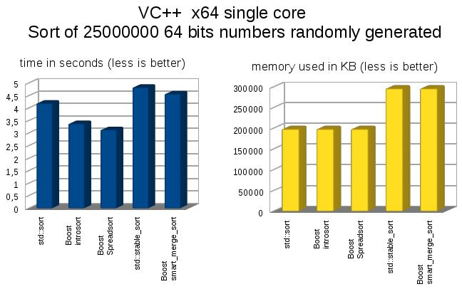
As you see, the specialized algorithm are much faster then the generic
algorithms.
TimSort it is not good for small size elements. It show its speed when
the size of the elements grows.
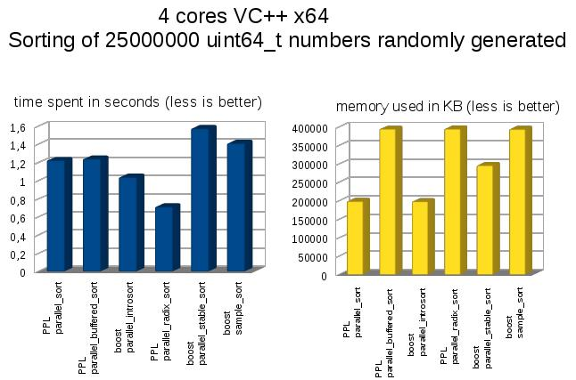
The additional memory needed for the stable sort is O(N/2) in parallel
stable sort, and O(N) in sample sort and TBB highlevel parallel stable
sort.
3.2.2.-
Strings benchmarks
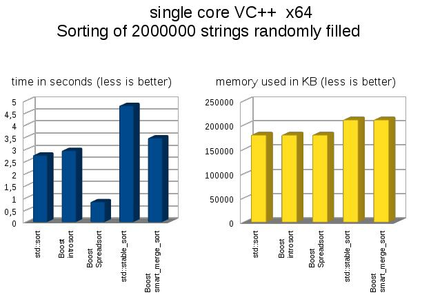
The specialized algorithms as spreadsort are extremely fast.
The time and memory used by timsort is very strange, And I suppose is
due to an internal error in the code
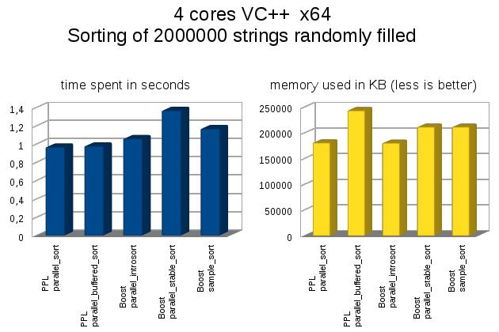
3.2.3.-Objects
benchmarks
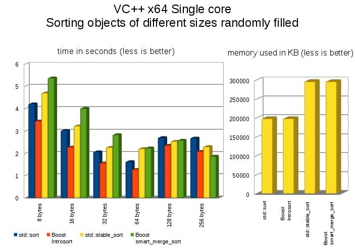
The not stable sort algorithms ( std::sort , boost introsort) are faster
than the stable algorithms (std::stable sort, boost smart_merge_sort and
timsort)
In the stable comparison the fastest with all the sizes is
smart_merge_sort. This algorithm had been designed and implemented for
this library by the author.
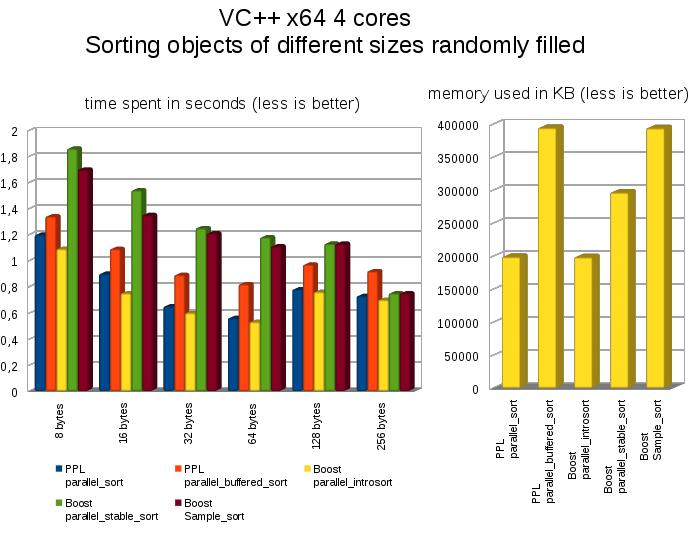
The not stable sort algorithms PPL parallel_sort and boost
parallel_introsort) are faster and need less memory than the others
algorithms
5.- References
and
Acknowledgements
REFERENCES
[01] Introduction to Algorithms. ( Cormen, Leiserson , Rivest ) MIT
Press
[02] C++ STL Sort Algorithms
[03] Algorithm + Data Structures = Programs ( Nicklaus Wirth) Prentice
Hall Series in Automatic Computation
ACKNOWLEDGEMENTS
Steven Ross.
Thanks by his generosity and patience, for let me participate in the
sort library and the improvements suggested.
Marisa, my love
Thanks by her patience and support in the creation of this library.